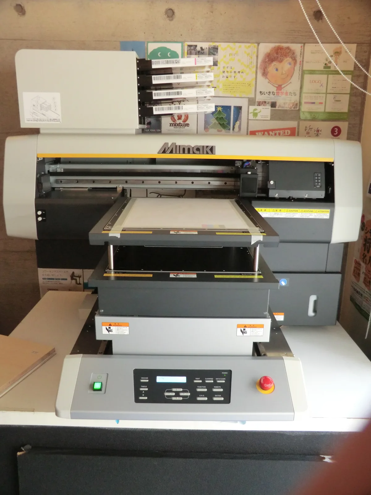
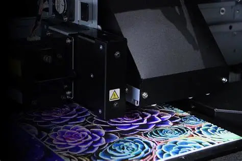
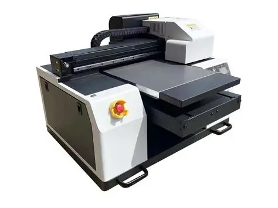
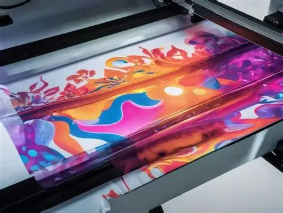

O que é a impressão digital UV?
A impressão digital UV deposita pequenas gotas de tinta diretamente no artigo através de cabeças de impressão. A luz ultravioleta provoca a cura da tinta, formando a imagem na superfície. O ficheiro digital orienta a impressão. ↗
Como funciona
Da arte à verificação, cada etapa prepara a seguinte. A impressão e a cura decorrem de forma coordenada no equipamento; a separação abaixo ajuda a compreender o processo. ↗
-
Preparar a arte
Definir o desenho, a escala e as camadas necessárias no ficheiro de impressão.
-
Posicionar o artigo
Preparar e fixar a peça, confirmar a área e ajustar a altura de trabalho.
-
Imprimir
As cabeças depositam gotas de tinta nas posições definidas pelo ficheiro.
-
Curar com luz UV
A luz ultravioleta cura a tinta durante o processo de impressão.
-
Verificar o resultado
Conferir posição, cor, legibilidade, acabamento e aderência segundo os critérios acordados.

Equipamento
Uma impressora UV de mesa apoia o artigo numa superfície de trabalho. Cabeças de impressão, sistema de posicionamento e iluminação UV trabalham em conjunto. Existem também configurações próprias para objetos cilíndricos. ↗ A fotografia é apenas ilustrativa: não identifica o modelo descrito pela Roland DG nem instalações da Nobrinde.

Os equipamentos de grande formato representam outra escala de trabalho, distinta da personalização de pequenos artigos numa mesa. Consulte o guia de impressoras UV para comparar configurações.
Quando escolher
Considere esta técnica para imagens a cores, detalhes e gradientes em artigos compatíveis. Pode ser uma opção para capas, painéis ou brindes com uma zona acessível à impressão. A Roland DG apresenta aplicações de impressão direta e reprodução de detalhes e transições de cor no seu equipamento. ↗ Antes de escolher, peça avaliação do desenho no artigo concreto.

Cores e acabamentos
CMYK permite construir imagens a cores. Branco e verniz dependem da configuração de tinta e do equipamento; não estão presentes em todas as impressoras. ↗ Confirme a cobertura sobre o fundo do artigo e o aspeto final numa prova. Uma referência Pantone orienta a avaliação, mas não constitui uma promessa de correspondência exata.
Preparação da arte
Envie o original, a dimensão final e a posição pretendida. Confira a ortografia e a leitura dos pormenores à escala de utilização. Combine com a produção a resolução e o formato do ficheiro, bem como eventuais camadas de branco ou verniz. Uma simulação ajuda a aprovar a composição; uma amostra permite avaliar o resultado físico.
Materiais e preparação
Vidro, metal e acrílico são exemplos citados pela Roland DG para sistemas de tinta específicos. A escolha da tinta e, quando necessário, de um primário faz parte da avaliação. ↗ Identifique o material e o revestimento, confirme a limpeza e a preparação adequadas e peça um ensaio no artigo. O primário não dispensa a validação da aderência.
Limitações
A aderência, a geometria, a dimensão imprimível e o acabamento dependem do artigo, da tinta e do equipamento. Curvas, relevos e diferenças de altura podem limitar o acesso das cabeças; uma solução para superfícies planas não se aplica automaticamente a uma garrafa. ↗ Peça confirmação da área útil e da resistência necessária ao uso previsto. A cura UV não garante, por si só, resistência universal a riscos, lavagem ou exposição exterior.
Comparar alternativas
Compare a tampografia para pequenas marcas e formas que exigem adaptação à superfície, a serigrafia para outras áreas e aplicações, ou o laser para uma marca sem tinta. A decisão deve considerar a peça, o desenho e a amostra aprovada.
Problemas frequentes e verificações
Um sinal pode ter várias causas. Estas verificações orientam a conversa com a produção.
Aderência insuficiente
Confirmar superfície, preparação, tinta e cura; pedir um ensaio antes de avançar com a produção.
Cor ou detalhe diferentes do esperado
Comparar com a prova aprovada, rever o ficheiro à escala final e avaliar o fundo e o acabamento do artigo.
Fontes e âmbito
As referências de fabricantes e fornecedores descrevem os seus próprios processos ou equipamentos. Não são especificações da operação da Nobrinde.